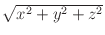

Next: Killing OOMMF Processes: killoommf
Up: Command Line Utilities
Previous: Vector Field File Difference:
Cyclic Redundancy Check: crc32
The crc32 application computes 32-bit cyclic redundancy checksums
(CRC-32) on files.
Launching
The crc32 command line is:
tclsh oommf.tcl crc32 [standard options] [-binary|-text] \
[-decimal|-hex] [-v level] [file ...]
where
- -binary|-text
- Select binary (default) or text input mode.
- -decimal|-hex
- Output CRC value in decimal (default) or hexadecimal format.
- -v level
- Verbosity (informational message) level, with 0 generating only error
messages and minimal CRC output, and larger numbers generating
additional information. The level value is an integer,
defaulting to 1.
- file ...
- List of files to process. If no files are listed, then input is read
from stdin.
For each file in the input file list, the CRC-32 is computed and output.
By default, the computation is on the raw byte stream (binary mode).
However, if text mode is selected, then text mode translations, e.g.,
carriage return + newline

newline conversion, is performed
before the CRC-32 computation. Text mode translations usually have no
effect on Unix systems. For additional information on text mode, see
the Tcl documentation for fconfigure, specifically ``-translation
auto.''
If the verbosity level is 1 or greater, then the length of the byte
stream as processed by the CRC-32 computation is also reported.
OOMMF Documentation Team
September 29, 2018